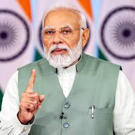
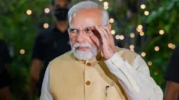

Narendra Modi

Modi was born and raised in Vadnagar in northeastern Gujarat, where he
completed his secondary education. He was introduced to the RSS at the
age of eight. At the age of 18, he was married to Jashodaben Modi, whom
he abandoned soon after, only publicly acknowledging her four decades
later when legally required to do so. Modi became a full-time worker for
the RSS in Gujarat in 1971. The RSS assigned him to the BJP in 1985 and
he rose through the party hierarchy, becoming general secretary in
1998.[c] In 2001, Modi was appointed Chief Minister of Gujarat and
elected to the legislative assembly soon after. His administration is
considered complicit in the 2002 Gujarat riots,[d] and has been
criticised for its management of the crisis. According to official
records, a little over 1,000 people were killed, three-quarters of whom
were Muslim; independent sources estimated 2,000 deaths, mostly
Muslim.[11] A Special Investigation Team appointed by the Supreme Court
of India in 2012 found no evidence to initiate prosecution proceedings
against him.[e] While his policies as chief minister were credited for
encouraging economic growth, his administration was criticised for
failing to significantly improve health, poverty and education indices
in the state.

In the 2014 Indian general election, Modi led the BJP to a parliamentary
majority, the first for a party since 1984. His administration increased
direct foreign investment, and it reduced spending on healthcare,
education, and social-welfare programmes. Modi began a high-profile
sanitation campaign, controversially initiated a demonetisation of
banknotes and introduced the Goods and Services Tax, and weakened or
abolished environmental and labour laws. Modi's administration launched
the 2019 Balakot airstrike against an alleged terrorist training camp in
Pakistan. The airstrike failed,[14][15] but the action had nationalist
appeal.[16] Modi's party won the 2019 general election which
followed.[17] In its second term, his administration revoked the special
status of Jammu and Kashmir,[18][19] and introduced the Citizenship
Amendment Act, prompting widespread protests, and spurring the 2020
Delhi riots in which Muslims were brutalised and killed by Hindu
mobs.[20][21][22] Three controversial farm laws led to sit-ins by
farmers across the country, eventually causing their formal repeal. Modi
oversaw India's response to the COVID-19 pandemic, during which,
according to the World Health Organization's estimates, 4.7 million
Indians died.[23][24] In the 2024 general election, Modi's party lost
its majority in the lower house of Parliament and formed a government
leading the National Democratic Alliance coalition.

In June 1975, Prime Minister Indira Gandhi declared a state of emergency
in India that lasted until 1977. During this period, known as "the
Emergency", many of her political opponents were jailed and opposition
groups were banned.[90][91] Modi was appointed general secretary of the
"Gujarat Lok Sangharsh Samiti", an RSS committee co-ordinating
opposition to the Emergency in Gujarat. Shortly afterwards, the RSS was
banned.[92] Modi was forced to go underground in Gujarat and frequently
travelled in disguise to avoid arrest, once dressing as a monk and once
as a Sikh.[93] He became involved in the printing of pamphlets opposing
the government, sending them to Delhi and organising
demonstrations.[94][95] He was also involved with creating a network of
safe houses for individuals who were wanted by the government, and in
raising funds for political refugees and activists.[96] During this
period, Modi wrote a Gujarati-language book titled Sangharsh Ma Gujarat
(In the Struggles of Gujarat), which describes events during the
Emergency.[97][98] While in this role, Modi met trade unionist and
socialist activist George Fernandes and several other national political
figures